Slot 1: /dev/sda, 128 GB SSD
Slot 2: /dev/sdb, 128 GB SSD
Slot 3: spacer
Slot 4: backup drive (750 GB at the moment)
Disk /dev/sda: 128.0 GB, 128035676160 bytes
255 heads, 63 sectors/track, 15566 cylinders, total 250069680 sectors
Units = sectors of 1 * 512 = 512 bytes
Sector size (logical/physical): 512 bytes / 512 bytes
I/O size (minimum/optimal): 512 bytes / 512 bytes
Disk identifier: 0x000f111e
Device Boot Start End Blocks Id System
/dev/sda1 63 215062154 107531046 fd Linux raid autodetect
/dev/sda2 215062216 248043599 16490692 5 Extended
/dev/sda3 * 248045568 250068991 1011712 83 Linux
/dev/sda5 215062218 248043599 16490691 82 Linux swap / Solaris
Disk /dev/sdb: 128.0 GB, 128035676160 bytes
255 heads, 63 sectors/track, 15566 cylinders, total 250069680 sectors
Units = sectors of 1 * 512 = 512 bytes
Sector size (logical/physical): 512 bytes / 512 bytes
I/O size (minimum/optimal): 512 bytes / 512 bytes
Disk identifier: 0x000f111e
Device Boot Start End Blocks Id System
/dev/sdb1 * 63 215062154 107531046 fd Linux raid autodetect
/dev/sda1 and /dev/sdb1 form a software RAID 1 array. Motherboard fakeraid was not working well with GRUB2
/dev/md0:
Version : 1.2
Creation Time : Thu Mar 13 23:32:26 2014
Raid Level : raid1
Array Size : 107465408 (102.49 GiB 110.04 GB)
Used Dev Size : 107465408 (102.49 GiB 110.04 GB)
Raid Devices : 2
Total Devices : 2
Persistence : Superblock is persistent
Update Time : Thu Mar 20 15:55:09 2014
State : clean
Active Devices : 2
Working Devices : 2
Failed Devices : 0
Spare Devices : 0
Name : dds-web1:0 (local to host dds-web1)
UUID : 1f606965:deff8eea:e7e84be3:71805e7a
Events : 36
Number Major Minor RaidDevice State
0 8 1 0 active sync /dev/sda1
1 8 17 1 active sync /dev/sdb1
Idle temperatures:
acpitz-virtual-0
Adapter: Virtual device
temp1: +27.8??C (crit = +100.0??C)
temp2: +29.8??C (crit = +100.0??C)
coretemp-isa-0000
Adapter: ISA adapter
Physical id 0: +28.0??C (high = +85.0??C, crit = +105.0??C)
Core 0: +27.0??C (high = +85.0??C, crit = +105.0??C)
Core 1: +28.0??C (high = +85.0??C, crit = +105.0??C)
Core 2: +25.0??C (high = +85.0??C, crit = +105.0??C)
Core 3: +27.0??C (high = +85.0??C, crit = +105.0??C)
pkg-temp-0-virtual-0
Adapter: Virtual device
temp1: +29.0??C
Ran MPrime stress test for over an hour:
acpitz-virtual-0
Adapter: Virtual device
temp1: +27.8??C (crit = +100.0??C)
temp2: +29.8??C (crit = +100.0??C)
coretemp-isa-0000
Adapter: ISA adapter
Physical id 0: +60.0??C (high = +85.0??C, crit = +105.0??C)
Core 0: +57.0??C (high = +85.0??C, crit = +105.0??C)
Core 1: +60.0??C (high = +85.0??C, crit = +105.0??C)
Core 2: +58.0??C (high = +85.0??C, crit = +105.0??C)
Core 3: +58.0??C (high = +85.0??C, crit = +105.0??C)
pkg-temp-0-virtual-0
Adapter: Virtual device
temp1: +60.0??C
These values varied over the course of the test between 60 and 80 degrees C, within limits. When the test ended, they dropped nearly instantly to idle temperatures.
Automatically installing security updates
Selected OpenSSH server and PostgreSQL during Ubuntu setup
Granted sudo permission to maintenance and andrew
Hostname: dds-web1
Recommended maintenance credentials:
maintenance/AV5YCwwFTp4T
Ultradesignagency credentials:
ultra/6SBFquUArxE4
Backend run-as user: dds, no password
scout_realtime user: scout, no passwords
andrew and ultra are are members of the dds group
auto eth1
iface eth1 inet static
address 162.217.198.242
netmask 255.255.255.248
gateway 162.217.198.241
dns-nameservers 199.187.240.75 199.187.240.76
Port: 6483 Root login disabled by default in passwd file
6483 is not checked by default nmap:
Starting Nmap 6.40 ( http://nmap.org ) at 2014-03-14 17:02 PDT
Nmap scan report for 128.54.251.88
Host is up (0.00020s latency).
All 1000 scanned ports on 128.54.251.88 are closed
Nmap done: 1 IP address (1 host up) scanned in 0.05 seconds
Installed fail2ban. Default configuration is sufficient
License key: 6a9db57a94a363e6d0b3880c4f69eccae83095f5
Installed server monitor from http://apt.newrelic.com/debian/
Configured with license key; now visible on dashboard here: https://rpm.newrelic.com/accounts/633953/servers/2788107
Set to start on boot
Installed Python agent from pypi
Fans were not being detected properly on boot, causing a great deal of noise (79 dB).
The recommended fix was to update the firmware, and a link was provided to firmware from 2011. No newer firmware was evident, so this was installed.
After the update, the server would not boot. A second support chat with Intel revealed that the E3-1230v2 was not supported by the old BIOS.
An Intel Core i3 processor was ordered because it was cheap and compatible with the old BIOS. Using that CPU, the BIOS was updated to version 41, which besides supporting our original choice of processor, fixed the FRU/SDR firmware issue causing the fans to run at maximum speed.
The Xeon processor was then reinstalled, and a second MPrime round revealed that all was working correctly.
Faceplate:
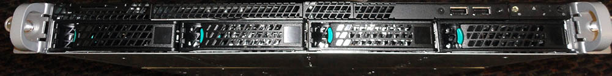
Overview:
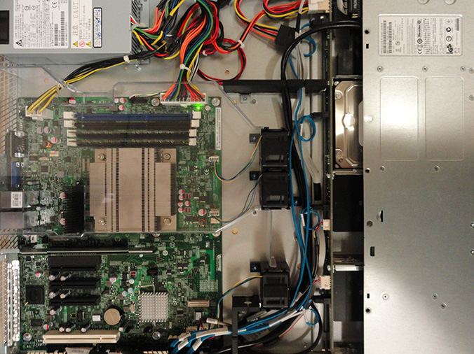
Memory and CPU heatsink detail:
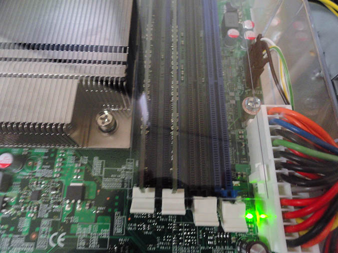 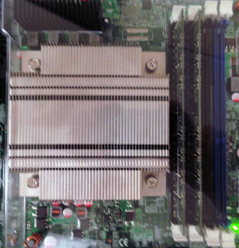
SSD serial numbers:
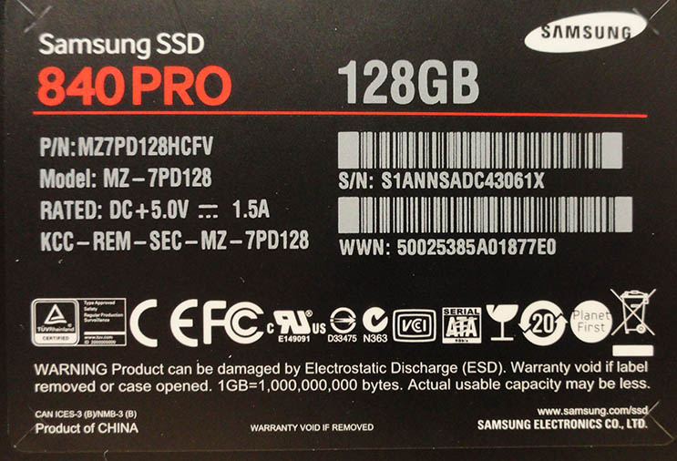 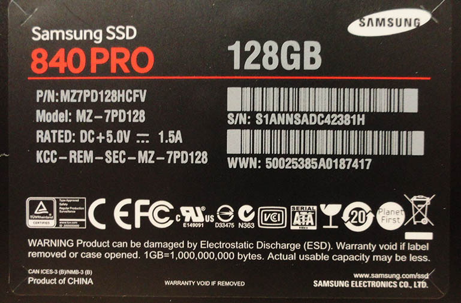
SSD caddie installation with spacers to maintain airflow over other drives:
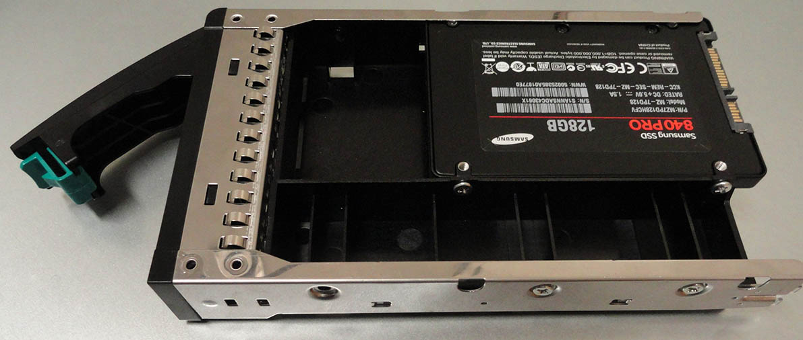
Chassis serial number:
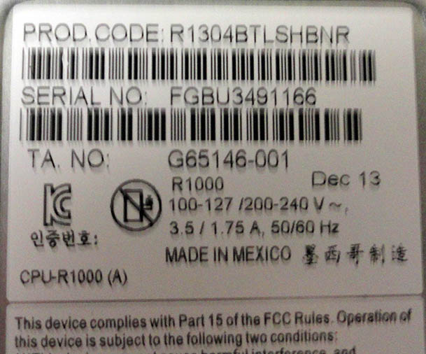
Power supply serial number:
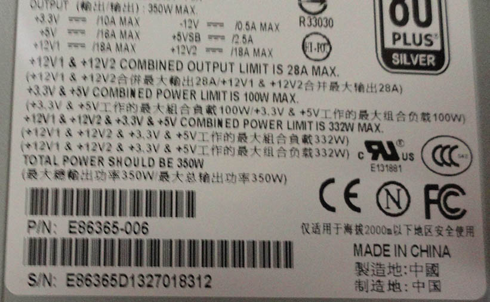
Motherboard serial numbers:
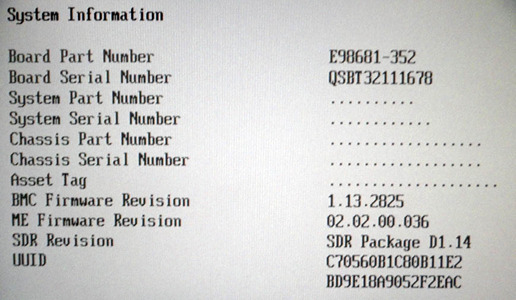 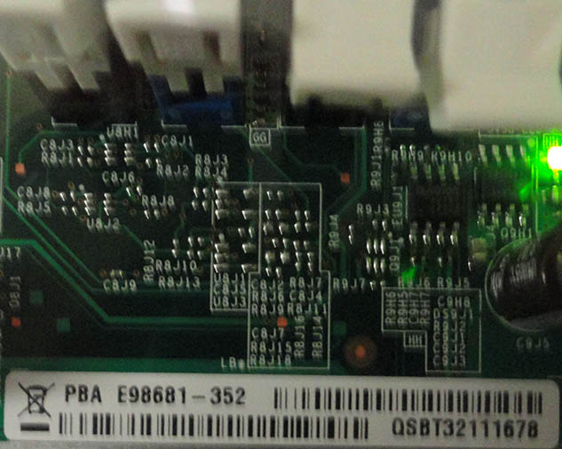
BIOS version:
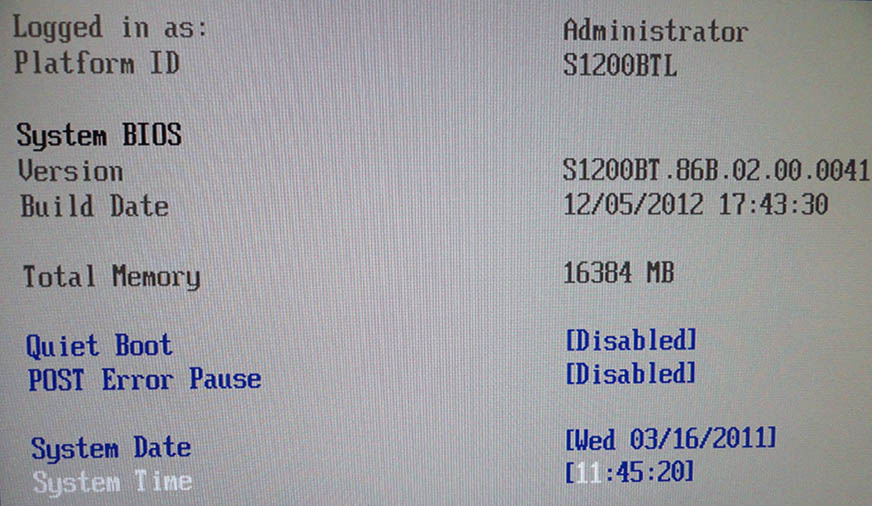